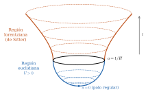

Invitados
Conoce a los profesores e investigadores invitados que nos acompañarán en las 8 charlas en conmemoración del Centenario de la Ecuación de Schrödinger y la Mecánica Ondulatoria.
J. Alfonso Leyva
Pontificia Universidad Javeriana
Über den Schrödinger: un cortissimo panorama
Reinaldo Bernal
Pontificia Universidad Javeriana
Emergencia
Javier Alexander Cano Arango
Pontificia Universidad Javeriana & Universidad Colegio Mayor de Cundinamarca
La Función de Onda del Universo: Ecuación de Wheeler-DeWitt
Ver resumen
Al preguntarnos si es posible estudiar el universo como un único sistema físico desde el punto de vista de la mecánica cuántica también surge la pregunta del cómo hacerlo, la respuesta a esta interrogante fue planteada de manera parcial a finales de los años 60 tras la introducción por Bryce DeWitt de lo que hoy día conocemos como la ecuación de Wheeler-DeWitt
ℋΨ[hij, φ] = 0
A lo largo de esta charla hablaremos sobre su significado, ¿es realmente una función de onda?, sus implicaciones ¿predice el Big Bang?, algunas soluciones (Hartle-Hawking, Vilenkin) y sus problemas ¿está bien definida?

Alejandro Fonseca
Universidad Nacional de Colombia
Schrödinger y Correlaciones No-locales
Ver resumen
A través de un modelo simplificado, mostraremos cómo la evolución temporal de sistemas cuánticos interactuantes conduce a observaciones incompatibles con una descripción clásica de la realidad. Asimismo, abordaremos brevemente conceptos clave relacionados con este fenómeno, como la decoherencia —y con ella la emergencia de la clasicalidad— y los escenarios de Bell.
Jorge Cifuentes
Centro Javeriano de Oncología
Sobre el entrelazamiento cuántico y la tomografía de emisión de positrones (PET)
José Luis Zamora
Universidad Distrital Francisco José de Caldas
Teoría de Wilson y fundamentos de Lattice QCD
Adriana de Mendoza
Pontificia Universidad Javeriana
La fotosíntesis bajo la mirada de la biofísica cuántica
Ver resumen
La fotosíntesis es uno de los procesos de conversión de energía más fascinantes de la naturaleza. Su comprensión requiere ir más allá de las descripciones biológicas tradicionales e integrar conceptos de física cuántica, óptica, química, termodinámica y biología. En esta charla exploraremos cómo las interacciones cuánticas, la dinámica excitónica y vibrónica, las fluctuaciones ambientales y los mecanismos de disipación y fotoprotección participan en el transporte y la gestión de energía en los sistemas fotosintéticos. Se discutirá, además, cómo las condiciones estadísticas de la luz solar y las restricciones físicas del entorno han influido en la adaptación evolutiva de estos sistemas para mantener un funcionamiento robusto frente a condiciones ambientales variables. Finalmente, se destacará la importancia de una mirada interdisciplinaria que conecte la física, las ciencias biológicas y las herramientas de modelación teórica y experimental como camino para profundizar nuestra comprensión de la fotosíntesis y abrir nuevas perspectivas de investigación en biofísica.
Darío Egloff
Universidad Sergio Arboleda
Sobre el gato de Schrödinger y einselection de Zurich
Ver resumen
El gato de Schrödinger: qué nos enseña sobre el mundo cuántico
¿Qué significa decir que un gato está «vivo y muerto»? Volvemos al célebre experimento mental de Schrödinger para explorar el problema que plantea y los límites de su representación habitual. Partiendo del argumento original, examinaremos por qué una superposición cuántica es distinta de la incertidumbre cotidiana y cómo podemos describir mejor la situación al considerar las relaciones entre el gato, el aparato y su entorno. Este recorrido permitirá acercarnos a las diferencias entre las teorías clásica y cuántica y sus consecuencias.